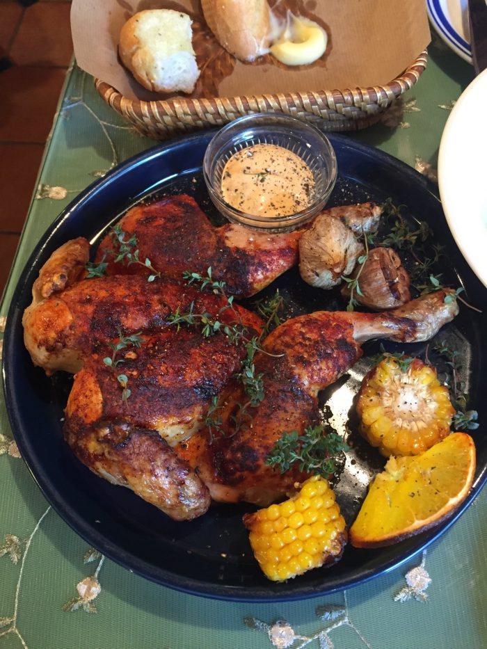
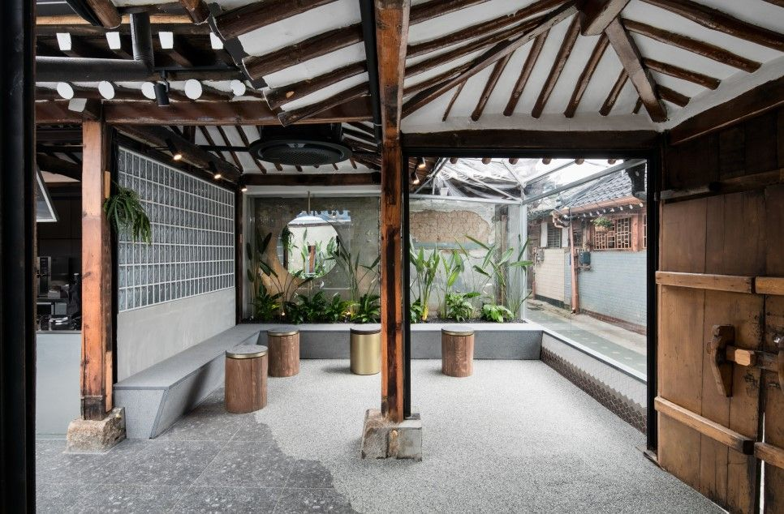
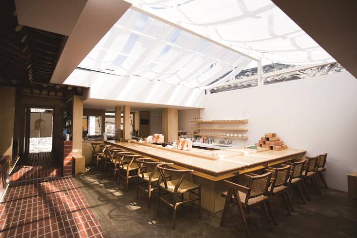
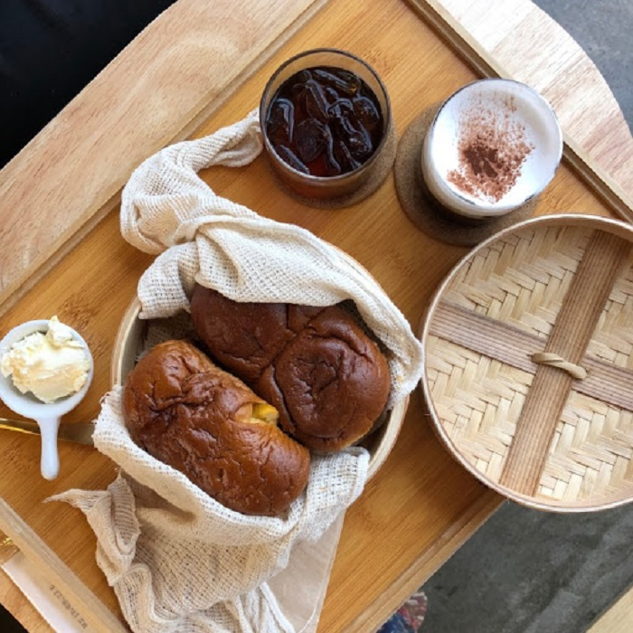
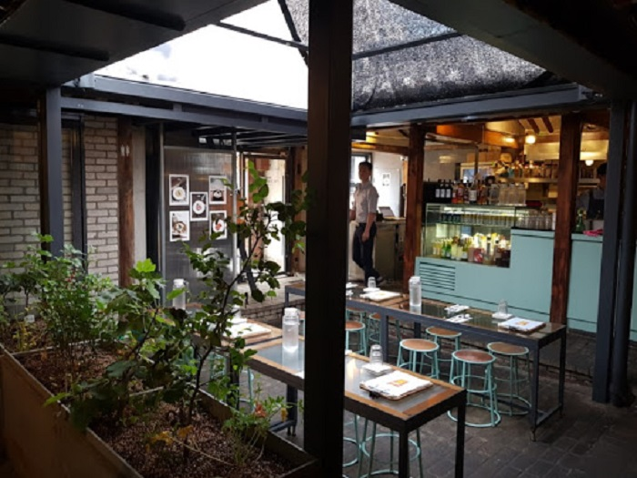
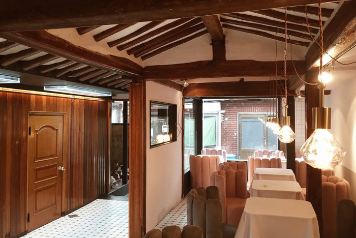
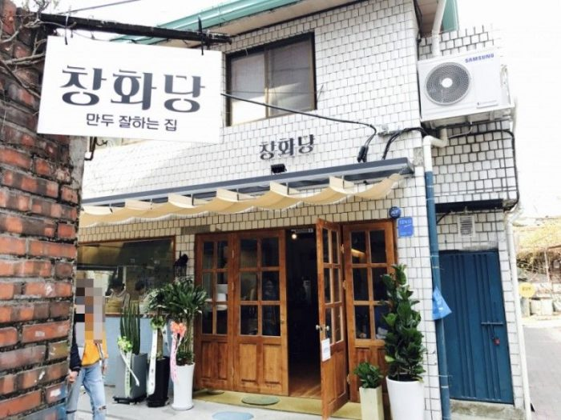
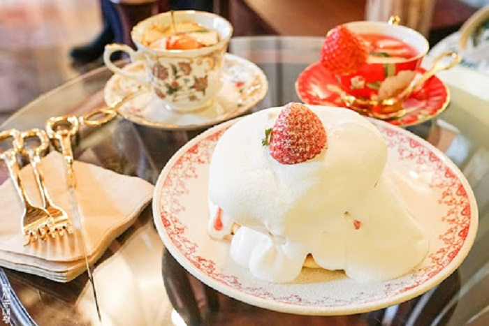
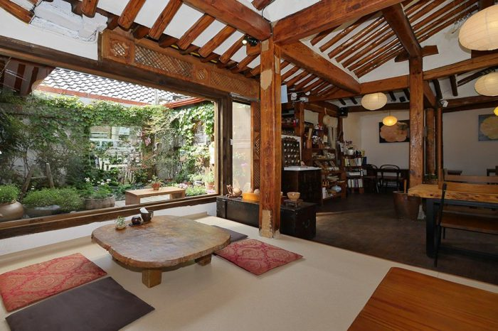
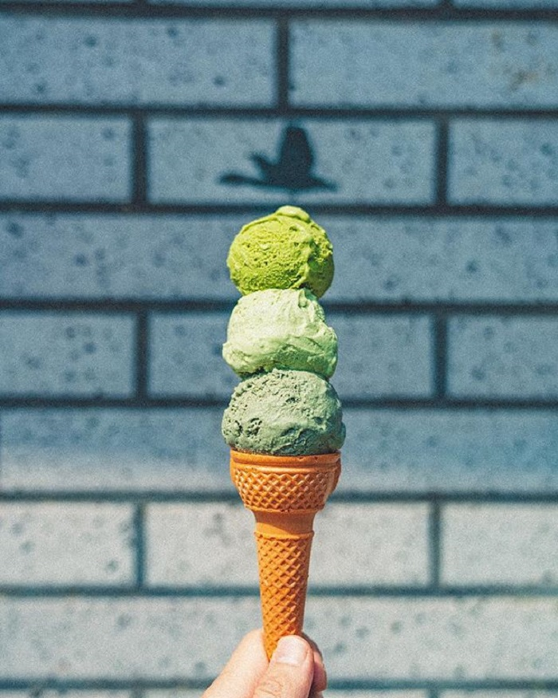

Du lịch Hàn Quốc
Welcome to Korea
Welcome to Korea
Nếu muốn tìm kiếm hương vị của Pháp tại Seoul? Vậy thì Le Blanseu là điểm đến lý tưởng cho du khách trong chuyến du lịch Hàn Quốc của mình. Nhà hàng này đã trở nên nổi tiếng sau khi xuất hiện trong Heart Signal (Nhịp đập trái tim) – một show truyền hình thực tế “ăn khách” của Hàn Quốc. Trong không gian hiện đại, với thiết kế vô cùng tinh tế và công phu, bạn có thể thưởng thức món ăn kiểu Pháp một cách trọn vẹn. Thực đơn tại đây rất đa dạng, được nhiều người yêu thích. Chẳng hạn như gà quay, ba chỉ heo chiên giòn và vẹm xanh hấp pho mát. Bạn cũng có thể nhấm nháp chút rượu vang đỏ và Sangria thơm ngon trong bầu không khí cực kỳ lãng mạn.
Seoul Coffee mang trong mình dáng vẻ của một ngôi nhà truyền thống Hàn Quốc. Nơi đây tự hào là một trong những địa điểm ăn uống ngon nhất ở Ikseondong. Để bước vào quán cà phê, du khách sẽ băng qua một khoảng sân rộng với chiếc mái che hình vòm cung. Bên trong quán có hệ thống cửa kính rộng mở. Vì vậy, không gian luôn tràn ngập ánh sáng và vẫn lưu giữ được bầu không khí mộc mạc, cổ kính của Seoul những năm 1980, 1990. Seoul Coffee trở thành biểu tượng hoàn hảo của Ikseondong: tôn trọng truyền thống nhưng vẫn toát lên vẻ đẹp thanh nhã, hiện đại của phương Tây.
Bạn có thể thưởng thức món bánh tráng miệng mang tên Tiramisu – một sự kết hợp giữa bánh gạo Hàn Quốc cổ điển và một loại bánh kẹo của Ý. Bên cạnh đó, cà phê Vienna Coffee đặc trưng tại đây cũng ngon không kém khi được phủ lên trên một lượng kem bông xốp, mềm mịn.
Bắt gặp mùi thơm của bánh mì mới nướng khi đang đi dạo trên phố, đảm bảo rằng bạn sẽ phải nhìn xung quanh để tìm kiếm chúng. Chắc chắn đây là lý do tại sao nhiều người ghé thăm Mil Toasthouse, một tiệm bánh giản dị và đáng yêu ở Ikseondong. Quán mang phong cách thiết kế nhẹ nhàng. Biển hiệu cũng chỉ là một tờ giấy trắng có in hình ổ bánh mì và dòng chữ “OPEN” phía trước. Chỉ cần đứng từ xa cũng đã ngửi thấy một mùi hương thơm ngon tuyệt vời. Làm sao ai có thể cưỡng lại được?
Thực đơn của Mil Toasthouse tập trung vào hai món: bánh mì cuộn hấp và bánh mì nướng soufflé kiểu Pháp. Cả hai loại bánh đều cực kỳ mịn, mềm, thơm, được phục vụ đủ nóng để làm tan chảy lớp bơ ở trên. Theo kinh nghiệm tìm hiểu địa điểm ăn uống ở Ikseondong, bánh mì nướng soufflé của Pháp có màu nâu vàng, phủ bên trên là bột quế. Hãy thử cùng kem phô mai việt quất hoặc kem vani để được tận hưởng món ăn một cách hoàn hảo nhé!
Chợ & khu Ăn uống Yeoldudal là một trong những địa điểm không thể bỏ qua ở khu vực lân cận Ikseondong. “Yeoldudal” có nghĩa là “12 tháng hoặc 12 mặt trăng” trong tiếng Hàn. Điểm gây ấn tượng của quán là khuyến khích thực khách ăn uống ngoài trời, với trần kính giúp bạn thưởng thức món ăn của mình dưới ánh trăng lãng mạn. Khung cảnh đẹp như tranh vẽ chắc chắn sẽ để lại một ấn tượng khó quên cho bất kỳ ai từng ghé qua.
Tại đây, bạn sẽ tìm thấy những món ăn ấm bụng như mì ống xốt kem với củ sen, salad cùng thịt lợn hun khói. Chỉ mới nghe thôi đã thấy hấp dẫn rồi. Trước khi tới, bạn hãy chắc chắn đặt trước một chỗ bởi vì chỉ có 10 bàn.
Hãy tạm gác lại những ngày tháng sôi động để trở về không gian hoài cổ tại Gyeongyangsik 1920! Nằm trong danh sách những địa điểm ăn uống ở Ikseondong nổi tiếng, Gyeongyangsik 1920 mang nhiều điểm đặc biệt về không gian và nội thất. Những chiếc bàn bọc vải trắng và đồ trang trí theo phong cách hoài cổ, ghế sofa màu hồng phấn, khăn ăn, menu và rèm cửa… Tất cả hòa hợp với cấu trúc hanok truyền thống Hàn Quốc. Hơn nữa, nơi này còn phục vụ các món ăn cổ truyền của đất nước. Có thể kể tới donkkaseu – món thịt heo chiên xù ngon nhất. Quả thật, món ăn này đã để lại hương vị đặc biệt, khó quên với những thực khách đã một lần thưởng thức! Chắc chắn khi tới đây, bạn sẽ càng thêm yêu ẩm thực Hàn Quốc.
Nếu bạn tới Seoul và hỏi thử một người dân địa phương về địa điểm ăn ngon ở Ikseondong? Chắc chắn họ không ngần ngại giới thiệu du khách đến với Changhwadang. Đây là một nơi tuyệt vời ở Ikseondong để thưởng thức bánh bao và đồ ăn nhẹ như tteokbokki. Nhà hàng này đã nhận được các đề xuất sáng giá từ những nhân vật nổi tiếng như Lee Young-ja – một diễn viên hài Hàn Quốc. Vậy thì chẳng còn lý do gì mà không tìm tới đây.
Dongbaek Yanggwajeom, hay tiệm bánh Camellia, là thiên đường của những món tráng miệng. Nếu là một tín đồ mê ngọt thì bạn đừng bỏ qua cơ hội khám phá những chiếc bánh kếp có lớp phủ đầy kem. Ngoài các hương vị bán chạy nhất như dâu tây và matcha, họ còn phục vụ bánh kếp chuối và bánh kếp đào.
Không chỉ ngon mà màu sắc cũng vô cùng hấp dẫn! Với tông nền chủ đạo là màu nâu vàng, Dongbaek Yanggwajeom đem lại bầu không khí ấm cúng, dễ chịu, tuyệt vời cho các cuộc trò chuyện với bạn bè. Phải thừa nhận rằng hơi khó để có được chỗ ngồi tại tiệm bánh này. Vì vậy, bạn nên ghé tới sớm trong ngày!
TTEURAN – quán trà với cái tên thật ấm áp, mang nghĩa là “khu vườn bên trong”. Khách hàng thường ghé tới đây để nghỉ ngơi trong không gian yên bình cùng với một tách trà. Bạn cũng có thể nhìn ra khoảng sân ngập tràn hoa dại và ánh nắng. Là một ngôi nhà hanok 90 năm tuổi, quán được người dân địa phương vô cùng yêu mến. Tại đây có rất nhiều loại trà thảo mộc đặc trưng. Đó là trà hoa cúc, trà xanh,…Ngoài ra còn có món cháo đậu đỏ truyền thống. Với mái ngói cũ và bầu không khí yên tĩnh, đây là một trong những quán ăn đẹp nhất ở Seoul.
Sau khi đi dạo quanh các con phố của Ikseondong, bạn nhất định phải dừng chân tại cửa hàng này bởi những bức ảnh đầy mê hoặc về kem. Có rất nhiều hương vị cho thực khách lựa chọn. Bạn hãy thử món kem việt quất bởi đây là loại được nhiều người ưa thích nhất. Thật là một món ăn hoàn hảo cho cái nóng như thiêu như đốt của mùa hè.
GỢI Ý TOUR DU LỊCH HÀN QUỐC |
|---|
>> Du Lịch Hàn Quốc: Hà Nội – Seoul – Lotte World – Trượt Tuyết Jangjipine 5 Ngày Trượt Tuyết Bay Jeju Air chỉ với 12.500.000 đồng
|
Top 20 điểm tham quan nhất định phải ghé thăm trong hành trình chinh phục Seoul

Điện thoại: 0903357616
Email: thaontps24690@fpt.edu.vn